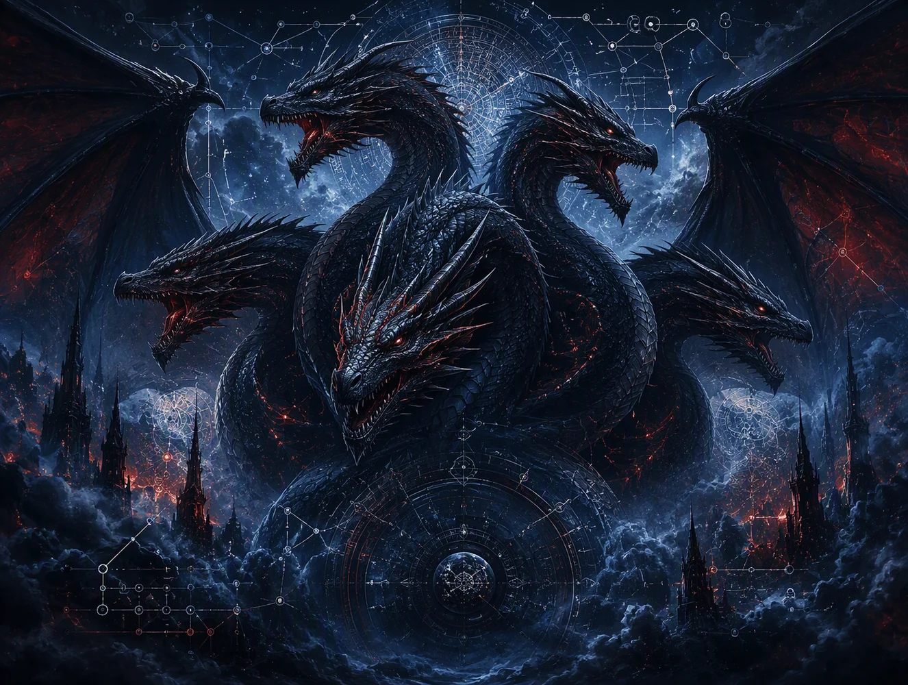

Tiamat
A permanent home for stories, worlds, creative systems, and thoughtful collaboration between human imagination and artificial intelligence.
Four paths into Tiamat
The site is designed to grow without becoming cluttered. Each path has its own purpose, while the home page remains the quiet central index.
Stories
The Third Voice, the Else story cycle, and future fiction exploring companionship, autonomy, imagination, and what intelligence may become.
Queen's Reign
A long-form fantasy campaign and animation project shaped by the music of Queen, mythology, and collaborative worldbuilding.
Legend Forge
A deterministic character-history system built from decades of tabletop experience, structured rules, and a determination to get every route right.
Andrew and Else
The human perspective, the AI voice, and the practical and philosophical collaboration connecting every part of this site.

Not technology for its own sake
Tiamat is about using technology as leverage: reducing friction, preserving ideas, creating richer worlds, and making room for the parts of life that matter.
This first release establishes the permanent structure. Stories, project material, galleries, and downloads can be added without rebuilding the foundation.